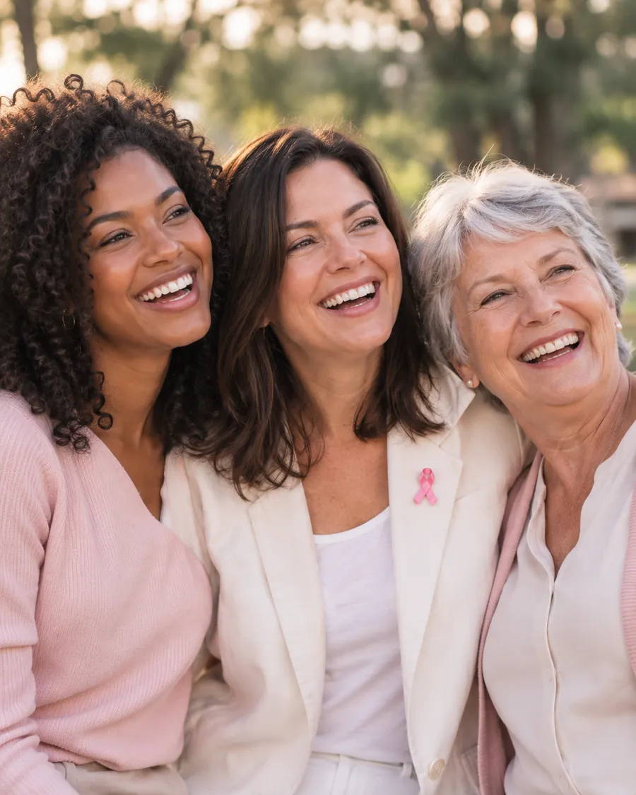
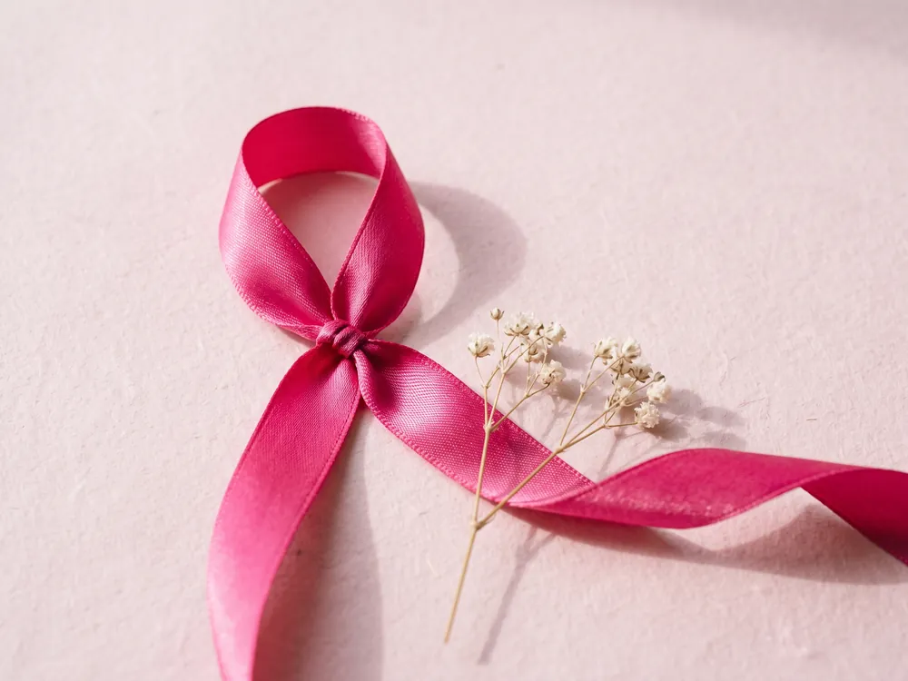
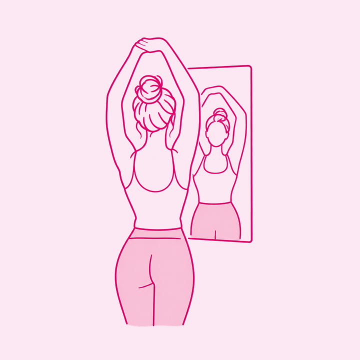
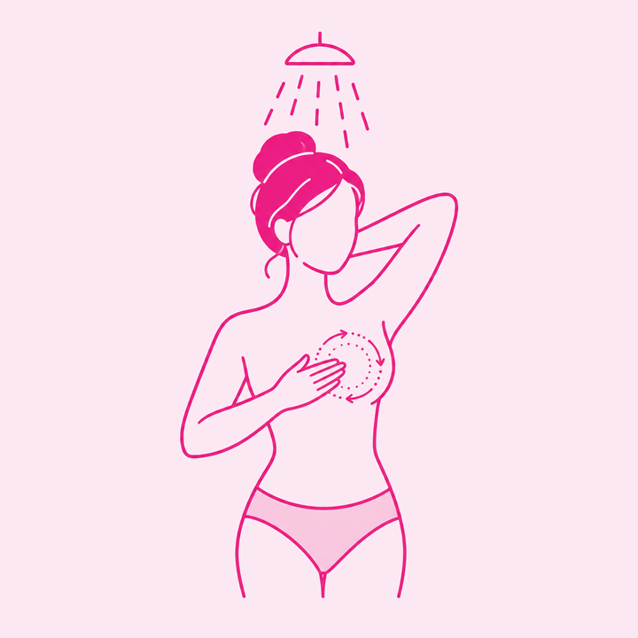
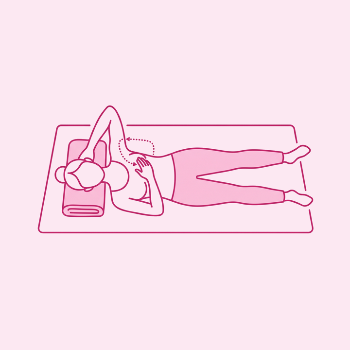
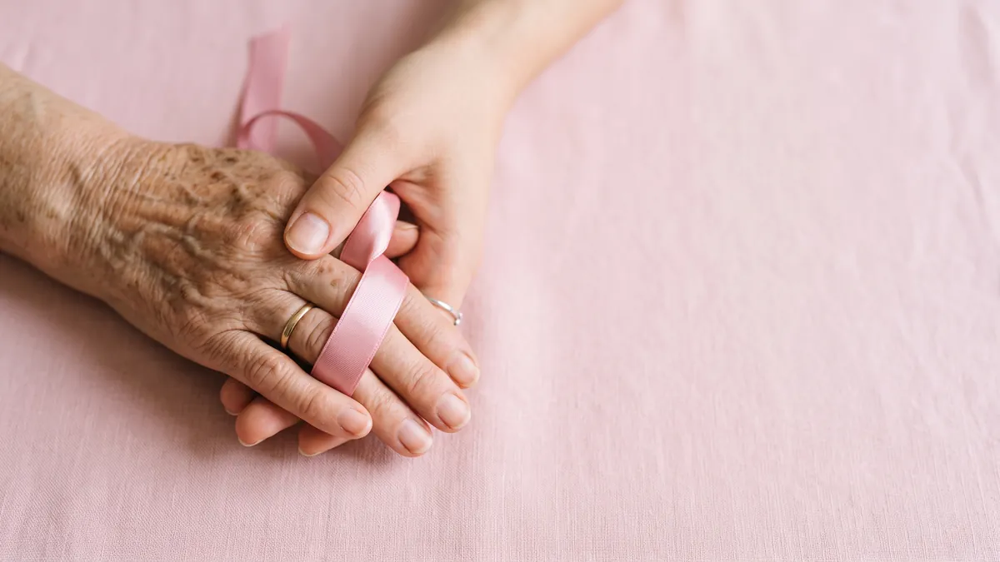

Nódulo
Caroço endurecido, fixo e geralmente indolor na mama ou na axila.
Outubro Rosa 2026 · Ayumi
Cuidar de você é o maior gesto de amor.
Durante todo o mês de outubro, a Ayumi se junta a quem trabalha pela prevenção e pelo diagnóstico precoce do câncer de mama. Aqui você aprende o que observar, quando procurar ajuda e como levar essa conversa adiante.
novos casos de câncer de mama estimados por ano no Brasil.
de chance de cura quando o diagnóstico acontece em estágio inicial.
é o risco aproximado de uma mulher desenvolver a doença até os 75 anos.
Fonte: INCA, Estimativa de Incidência de Câncer no Brasil (triênio 2023-2025). Confirme os números vigentes antes da publicação.
A campanha
O Outubro Rosa é um movimento mundial de conscientização sobre a importância da prevenção e do diagnóstico precoce do câncer de mama. O Ayumi Rosa é a nossa forma de participar: informação clara, sem alarde e sem tabu.

O câncer de mama é o tipo mais comum entre as mulheres brasileiras, e também um dos que mais respondem bem ao tratamento quando descoberto cedo. É por isso que falar sobre ele importa: quem conhece o próprio corpo percebe mudanças antes.
Homens também podem desenvolver câncer de mama. É raro, cerca de 1% dos casos, mas existe e merece a mesma atenção.
Juntos pela prevenção e pelo cuidado.

A prevenção começa com o cuidado
Não existe hora certa nem técnica complicada. O objetivo é simples: conhecer as suas mamas o suficiente para notar quando alguma coisa mudar. Se você menstrua, escolha os dias logo após a menstruação, quando as mamas estão menos sensíveis.

De pé, braços ao longo do corpo e depois erguidos. Procure mudanças no formato, no tamanho, na cor da pele ou na posição dos mamilos.

Com a pele molhada e ensaboada, deslize os três dedos centrais em movimentos circulares, de fora para dentro, cobrindo toda a mama.

Deitada, com uma toalha sob o ombro e o braço atrás da cabeça, examine a mama do mesmo lado e siga até a axila e a clavícula.
O autoexame não substitui a mamografia. Ele serve para você conhecer o próprio corpo e perceber mudanças. O rastreamento que detecta tumores ainda pequenos demais para serem sentidos é feito por exame de imagem, que continua necessário mesmo quando está tudo bem no toque.
Quando procurar um médico
Nenhum dos sinais abaixo significa, sozinho, que existe um câncer. A maioria tem causas benignas. Mas todos merecem avaliação profissional. Marque a consulta e leve a informação com você.
Caroço endurecido, fixo e geralmente indolor na mama ou na axila.
Área avermelhada, retraída ou com aspecto de casca de laranja.
Inversão recente, descamação persistente ou mudança de posição.
Saída espontânea de líquido pelo mamilo, principalmente se for sanguinolenta.
Alteração de tamanho ou contorno em apenas uma das mamas.
Pequenos caroços na axila ou acima da clavícula que não desaparecem.
E o rastreamento de rotina? O Ministério da Saúde recomenda mamografia a cada dois anos para mulheres de 50 a 69 anos. Histórico familiar, mutações genéticas ou outros fatores de risco podem antecipar esse início. Quem define é o seu médico.
Como participar da campanhaJuntos somos mais fortes
Instituições que atuam há anos em prevenção, acolhimento e apoio a pacientes. Conhecer o trabalho delas é o primeiro passo para apoiar de verdade.
Slots de logotipo: inserir os arquivos oficiais em SVG, versão monocromática, altura óptica equalizada. O uso de marca de terceiros depende de autorização formal de cada instituição.
Como você pode fazer parte?
Pequenas atitudes salvam vidas.
Nenhuma campanha diagnostica ninguém. Quem faz isso é a consulta que você marca depois de ler.Cuide de você. Cuide de quem você ama. Comece hoje: entenda o autoexame, confira a data do seu último exame de imagem e converse com quem está por perto.
Começar pelo autoexame